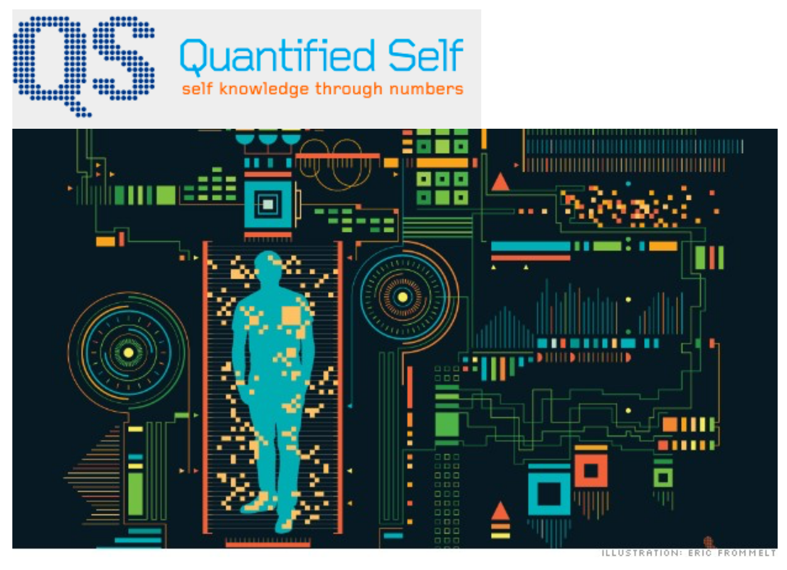

Archives, technology, and innovation
Bonjour mes collègues et amis. I am honoured to address you today. Before I begin I would like to recognize the Mohawk first nations on whose traditional territory we are meeting today.
When the ACA 2016 Program Committee approached me to see if I would be interested in providing the plenary address for this conference, I was instantly inspired by the conference theme and the corresponding call for submissions which focuses on the intersection of innovation, technology and archives:
‘Futur proche’: Archives and innovation
- Archival records are the product of technologies. Technological innovations influence the way people create, receive and store documents.
- How are archivists responding to the needs and pressures of a technologically-driven society and the demands of the near future?
- What is the impact of technology and technological innovation on archival work?
- What innovative practices have emerged to create, preserve, and use archival documents in new and exciting ways?
- Explore archives as technology.
It was exactly twenty years ago that I began my career in the field of archives and technology. I was hired by an archival software vendor the summer of 1996 before starting my second year in UBC’s Master of Archival Studies program. Since then, many of these topics and ideas have been the focus, and sometimes the obsession, of my professional and personal life.
What is technology?
So I think a good place to start is to define technology. Most of the modern dictionary definitions describe it as a practical application of knowledge that provides a new capability:
“a capability given by the practical application of knowledge” – Merriam-Webster dictionary
Definitions for innovation focus on the process of introducing new capabilities:
“the act or process of introducing new ideas, devices, or methods” – Merriam-Webster dictionary
The roots of information technology
How’s this for technology?
Archives are documentary artefacts. They are products of human actions that are intended to record information, communicate a message, and act as aids to memory.
The earliest known examples of this process and capability include this chunk of red ochre which bears deliberate incision marks. It was found in Blombos Cave near Capetown, South Africa and dates to 77,000 BC.
The ability and urge to communicate through the use of symbolic representation is often cited as a fundamental human attribute.
Our inherent drive to communicate and to have those messages survive the ravages of time has inspired countless acts of innovation.
The oldest cave drawings attributed to our homo sapien species date back as far as 40,000 B.C. and appear throughout Europe and Asia.
Clearly this is an innovation in the intent to record information, capture memories and communicate a message.
What are these hands reaching forward through space and time from a distant Indonesian cave communicating to your conscious perception right now? What was the intent of their authors?

The ability to clearly capture the intent and content of a message through more abstract symbols with consistent meaning, was another major forward leap in human innovation and technology.
Proto-writing systems use pictographic and mnemonic symbols to convey information but are devoid of direct linguistic content that represents specific spoken words or sounds.
Examples of proto-writing, like that found on these clay tablets from the village of Tărtăria in Romania, are thought to have emerged around 5000 BC.
However, some recent studies suggest that the development of proto-writing was happening even earlier than originally thought.
University of Victoria’s Genevieve von Petzinger discovered that similar sets of symbolic marks were appearing again and again in the French cave paintings she was researching.
They are now being found in other parts of the world. This is leading some to believe that symbolic communication arose with early humans.
This distributed, emergent pattern hints that the innovative process that developed the technology of writing includes something driven not just by isolated sparks of genius within some extraordinary humans but through a more deliberate, evolutionary process; perhaps through a shared archetypal awareness, what Jungians would call the collective unconscious.
The ancient Egyptians believed that their hieroglyphic writing system was passed down to mortals from deities. Specifically the goddess Seshat who invented writing and Toth, the scribe of the Gods, who taught it to humans.
Seshat was the Ancient Egyptian goddess of wisdom, knowledge, writing and history. One of her titles is the “Mistress of the House of Books”. Her priests oversaw the archives in which scrolls of the most important knowledge were assembled and preserved.
Modern writing systems are believed to have developed independently in Egypt, China, Mesoamerica, and Mesopotamia. The earliest tablets with written inscriptions represent the work of administrators recording the allocation of rations or the movement and storage of goods.
This tablet from 3000 B.C. records the allocation of beer.

Temple officials needed to keep records of the grain, sheep and cattle entering or leaving their stores and farms and it became impossible to rely on memory. So, an alternative method was required using a round-shaped stylus impressed into soft clay at different angles for recording numbers. This was gradually augmented with pictographic writing using a sharp stylus to indicate what was being counted.
Other recordkeeping systems evolved elsewhere in the world. In Andean South America the Incas used Khi-pus. These cords contained numeric and other values encoded by knots in a base ten positional system.
The Inca used these as a system for collecting data and keeping records on tax obligations, population census, calendar information, and military organization.
Here in North America, the Wampum is used by some First Nations to record personal credentials, serve as a certificate of authority and aid in the narration of stories. Within the Iroquois Confederacy, the On-on-da-ga Nation was trusted with the task of keeping wampum records.
The roots of archival practice
The deliberate collecting and organizing of records into collections for their ongoing preservation and access is clearly another innovative phase in the history of archives. One of the oldest archives ever found is located in Eb-la near modern day Aleppo in Syria. It dates back to 3000 BC.
Larger tablets were stored on shelves and there is tangible evidence of their arrangement and even classification according to subject. These features were absent in earlier storehouses of Sumerian tablets.
By the third century BC, archives and libraries were recognized as institutions that legitimized governance, celebrated power, and honoured the human thirst for knowledge and wisdom. The most grand and famous of these is the Library of Alexandria which was also thought to be home to the first library catalog.
The Tabularium was the well-known, official records office of ancient Rome.
Official archives were also well-developed by the ancient Greeks and Chinese. Archives of churches, kingdoms and cities from the Middle Ages survive through today and many have often kept uninterrupted official status until the present. The most famous example is the Vatican Secret Archives.

Over this period we saw the development of paleography and diplomatics as innovations in the understanding of the nature and characteristics of archival documents.
Modern archival thinking has many of its roots in the French Revolution and the establishment of the French National Archives from which the principle of respect des fonds emerged.
Over the past 150 years, most of the innovation in our field has emerged from an ongoing dialogue between theory and practice. Debating how archival holdings are best organized and managed in light of societal changes and expectations.
From the Dutch Manual and registry system, to the emergence of filing systems, the records management profession, the series system, Jenkinson vs Schellenburg, the records lifecycle vs. the records continuum.
By the mid 80’s much of the collaborative innovation in the profession was focused on the development of standards to codify best practices. Of course, our Canadian colleagues played a critical role in these developments, starting the with Bureau of Canadian Archivists committee on descriptive standards whose work led to our Rules for Archival Description, the development of which had a strong influence on the International Council on Archives’ International Standard for Archival Description.
Introducing technlogy into archival practice
From a technology perspective, early innovation in our field included the introduction of microfilm.
This practice began at the U.S. National Archives in 1936 as a way to supplement finding aids, to preserve frequently used documents, and to aid researchers who found it difficult to travel to remote research rooms. They could now simply order a roll of microfilm rather than plan a potentially expensive trip to archives far from home.
Technical innovations in archival storage include the acid-free storage box, bar code readers, and moving shelves
Working closely with museum artifact conservators, other innovations have included improved techniques to restore at-risk materials as well as advancements in building design and electronic controls to manage key environmental factors such as temperature, relative humidity, and light exposure. Library and Archives Canada’s Gatineau Preservation Centre is a world-class example of this culmination of expertise.
The digital information age
However, I think it is fair to say that the most dramatic innovation and technological changes in archives have come as a result of the Digital Information revolution.
Of course, this can be said for all sectors of society in the developed Western world as digital industries and a high-tech global economy have ushered in a dramatic transformation from an industrial age to a knowledge-based society where the modernization of information and communication processes has become the driving force of social evolution.
The principles of modern computing on which our digital age is based were first proposed by Alan Turing in his seminal 1936 paper “On Computable Numbers”. Herein he proposed a device that is capable of executing algorithmic instructions or programs stored on tape memory.
Using Turing’s theories this Colossus machine was used in 1944 to break German code ciphers. It was the first operational, electronically programmable computing device.
In 1971 Intel introduced the first single-chip microprocessor, enabling the introduction of the Apple II and, with it, ushering in the personal computing era.
The personal computing revolution has had a dramatic effect on our society and culture. Everyone in this room has been witness to an exponential curve of innovation that has brought many new experiences, opportunities, and challenges.
In the Western developed world, digital culture is threaded throughout modern life. As an example, the ACA is meeting here in Montreal this week in conjunction with not one but two major digital arts festivals.The early intersection of archival practice and digital information
If we want to overlay a chronology of our own innovation in the field of information and archival science on top of the digital information age timeline, then many scholars would start with Vannevar Bush’s “As we May Think”.
This essay was published in The Atlantic in 1945 after the atomic bombings of Hiroshima and Nagasaki. Bush expresses his concern for the direction of scientific efforts toward destruction, rather than understanding. In his Memex, he describes a sort of collective memory machine that would make knowledge more accessible, believing that it would help fix these problems.
Bush also expresses concern about information overload inhibiting the research efforts of scientists and the need for techniques and devices that allowed for personal information control. Through this machine, he hoped to transform an information explosion into a knowledge explosion.
The Memex is credited with anticipating hypertext, personal computers, the Internet, the World Wide Web, speech recognition, Wikipedia, the mouse, and the word processor.
Another notable starting point could be Claude Shannon’s 1948 publication "A Mathematical Theory of Communication” for which he is credited with the invention of mechanical information theory. In this work he analyzes information entropy in the signal-to-noise ratio and the decoding of information between a sender and receiver.
However, the most tangible place to start our own “Archives & Information Technology” timeline is probably around 1958 when the U.S. National Archives began use of the SPINDEX system to automate the indexing of finding aids.
The project involved two million manuscripts and was not completed until 1976 after dealing with a wide array of management, technical, usability, and cost issues. It was oriented to the printing of guides rather than to information retrieval in response to specific user queries.
In 1964 Dr. Califano addressed the international council on archives in Brussels. His talk marked the first coordinated effort by the profession to agree on principles of automatic data for processing.
Here in Canada “The use of electronic data processes to produce indexes for the papers of Prime Ministers" was studied in 1965 and a program was developed in cooperation with the Department of National Revenue’s Data Centre. In 1969 the first complete index was produced.
During the 1970’s and early 1980’s the sparse writing on the use of computers in archives introduces colleagues to the capabilities and limitations of applying computing technology to archival management functions, in particular archival description and access. Much of this literature seem to focus on convincing archivists that the endeavor is worth it.
However, the other theme is the notable lack of dedicated database and indexing systems for archives. In his preface to the 1980 publication, Archives and the Computer, Michael Cook notes while there are some national archival institutions that have established “sensible, practical systems” the challenge remains to adapt these for use in mid-sized organizations. He notes that libraries have been more successful thanks to their greater numbers and their more ready access to institutions with computing hardware.
Therefore, much of the early adoption of information technology during this period is limited to the use of word-processing hardware or software to print hard-copy finding aids for reference use in research rooms.

In the United States, the dominant trend was for archives to leverage libraries systems and their predominant MARC cataloging format to automate finding aid indexing and provide search access through library catalog systems.
The “Machine-Readable Catalog” project began in 1966 when the Library of Congress and later the Ohio College Library Centre (OCLC) began sending out cataloging records on magnetic tape to libraries across the country.
In 1977 the Society of American Archivists (SAA) created a National Information Systems Task Force (NISTF) which determined that no single system could serve the needs of all archival users. Instead, it advocated a common format for archival information so that archives could exchange data between systems and thus the MARC AMC – Archives and Manuscripts format was born. Despite inheriting many of its quirks from both library cataloging and the restrictions of retrieving information from magnetic tape, MARC AMC was the predominant data format for archival catalogues for over two decades.
During the 1980’s and 1990’s client/server database information systems were increasingly being made available to researchers in reading rooms and archives staff desktops using Local Area Networks (LANs). Small archives management software vendors had emerged, each mostly targeting their own national markets: such as CALM in the UK, GENCAT in Canada, AdLib in the Netherlands.
Then the computing world transitioned from text-based DOS interfaces, PINE email, and Gopher wide-area networks to Graphical User Interfaces and the World Wide Web. For developers of archival software, innovation was focused on migrating DOS interfaces to Microsoft Windows and to HTML that could be rendered by web browsers.
In the United States, the National Union Catalog of Manuscript Collections (NUCMUC) provided researchers access to a unified national database of information about archival holdings. In Canada, before the Canadian Archival Information Network was eventually launched, there was a failed attempt to establish a “Union list of Manuscripts”. However, in 1991 the Archives Association of BC launched the BC Archival Union List (BCAUL) project as the first networked access in Canada to a multi-repository shared database of archival descriptions.
The EAD encoded archival description version 1 was released in the fall of 1998 using SGML. Later versions transitioned to the use of XML. This markup format was chosen largely because it was intended to be a system-independent format that would be forward-compatible over technology generations. EAD adoption was a natural progression from file-based catalogues that used MARC. But that wasn’t necessarily the case for Canadian archival institutions that had invested considerable time and effort creating RAD descriptions and entering these into dedicated archives databases. Using EAD XML files as the canonical data store for archival descriptions versus a database store demarcated two distinct approaches to archival management software going forward.
The evolution of free and open-source software for archives
The next major wave of innovation in archives technology came in the mid-naughts with the introduction of open-source software and practices. The Archivist Toolkit and Archon applications were developed in the U.S. as EAD-based tools which eventually merged into the ArchivesSpace application.
I developed the AccessToMemory, AtoM tool as a web-based archives management application after drawing much inspiration from the free software movement, open-source content management systems like Drupal and Wordpress, open-source library tools like Dspace and Greenstone, and next generation Model-View-Controller web frameworks like Ruby on Rails and Django. In collaboration with the International Council on Archives and the Canadian Council on Archives, the software was designed to be a practical and dedicated implementation of archival description standards and their corresponding data models.
I was personally motivated to introduce an open-source software option to the archival community as I believed it would help to reduce the shared cost of new technology development, improve standards adoption, facilitate inter-institutional collaboration, and help to raise the technical capacity of archivists. I am proud to say that the number of AtoM-related sessions at recent TAATU and ACA conferences are a reflection that this has been coming to fruition.
The recent launch of ArchivesCanada as a faceted-search capable, multi-repository, multi-lingual, and multi-level national archives web portal is also testament to the innovative potential of a multi-partner technical collaboration based around the pay-it-forward, open sharing principles of the open-source movement where each new user benefits from the technical, financial, and use case contributions made to the software in previous rounds of development.
Digitization
Access to digitized archival records is in strong demand on portals like ArchivesCanada. Scanning and digitization technology has provided unprecedented immediacy to archival researchers who are now able to access text, image, audio and video content anywhere in the world through a web browser.
This has raised expectations from archives users. We archivists have quickly learned that meeting that demand can be costly, labour-intensive, and often-times unrealistic. This has led to new practices such as scan-on-demand services as well as the introduction of new business models for archives with partners like Ancestry.ca, Canadiana.org, Google and the Internet Archive.
Electronic records: the archivist's ultimate challenge
Of course, the digital information age ushered in a dramatic change to the very nature of the materials archivists manage. Starting slowly at first but snowballing to epic proportions today, the majority of archival materials are now being produced in digital formats.
Early investigations into the archival management of what were then called “machine-readable records” are very much concerned with whether archival principles need to adjust to accommodate materials in electronic formats. Electronic records and digital preservation literature in the 1980’s and 1990’s were focused on the question of whether our existing archival theory and practices applied to materials in electronic formats or whether new theories and practices were required.
Most professional practice was based around bitstream preservation. The rescue of legacy media and getting files and their bitstreams onto dedicated, tape backup. Digital preservation advice included detailed instructions on how to iron magnetic tape to ensure its longevity.
Early innovations in the field included finding new uses for old sciences and the discovery that traditional archival theory and practices do in fact have much to offer to guide the work of archivists in the field of digital preservation. The pioneering work of Luciana Duranti and Terry Eastwood at UBC led to the long-time defacto records management standard DOD 5015.2. Their work also introduced the application of system modeling methodologies to the analysis of electronic records management and preservation. This activity laid the foundation for the influential InterPARES research, SSHRC's longest-running project.
For my second job I had the benefit of serving as the first InterPares project coordinator which is where I gained an appreciation for the magnitude of the digital preservation challenge. I don’t think it is hyperbole to say that establishing the theory and practice to ensure the long-term preservation of authentic electronic records has to date been the most significant technological challenge for the archival profession.
The complexity of digital information objects requires preservation of their content, structure, context, presentation, behaviour as intellectual entities as well as bitstreams.
But we know this is challenging due to:
- Rapid technological change that drives constant system upgrades, migrations and the retirement of legacy technologies.
- The lack or loss of adequate metadata describing digital information objects and their context of creation and use as records and archival material
- Incompatible, obsolete, obscure or proprietary systems and file formats.
- Loss or damage to bitstreams due the fragility of digital storage media, system error, or human error.
- The overwhelming volume of digital information objects created daily, each with many possible copies and versions.
- Accidental or malicious content alteration.
- Doubts about the reliability and integrity of electronic records and the inability to vouch for their authenticity.
- The lack of formally recognized organizational responsibility, resources and enterprise architecture components that facilitate digital preservation and longterm access.
Digital preservation expertise and solutions to address these problems have been developed over the past 15 years namely as R&D within large archival institutions, university research libraries, and publicly funded research collaborations. The technical innovations that we’ve developed to address long-term usability are based on:
- bitstream preservation
- technology preservation
- disk image preservation
- file normalization and migration
- system and software emulation
Some significant developments in the early era of institutional digital preservation include:
- The transition from tape and optical media storage to high-capacity external hard disks and enterprise networked attached storage devices.
- Utilizing a variety of media-specific transcoding tools to normalize or migrate at-risk file formats to ubiquitous, open-standard formats.
- The PRONOM file format registry which tracks the types of known digital file formats and their technical specifications.
- The ISO OAIS and TRAC standards gain widespread traction as the de-facto reference model and organizational audit checklist for digital preservation systems.
- Widespread adoption of openly developed and published metadata standards (e.g. Library of Congress’ PREMIS, Bagit, METS and Dublin Core) to improve interoperability and prevent data lock-in.
- The development of digital preservation program cost modeling toolkits.
- Using ISO 14721 OAIS as reference model, early adopters integrate suites of single function tools into more complex micro-service processing pipelines and application stacks.
- Open-source as a preservation strategy emerges as a trend (free access to source code, community-based development), building on the widespread use of open-source transcoder and file utility tools.
Other innovations and technical trends in the past few years of in field of digital preservation include:
- Large scale web archiving led by the Internet Archive and members of the International Internet Preservation Coalition.
- The use of digital forensics tools and methodology for electronic records transfer and processing.
- Open APIs; making internal digital preservation processes and services available to external systems and online services as programmable interfaces, allowing more sophisticated enterprise architecture designs and mixing/matching best-of-breed tools.
- Emulation as a service: online libraries of on-demand VMs with licensed OS and application software configuration options to load electronic records in emulated creation environments.
- The Archivematica Format Policy Registry: crowd-sourced preservation monitoring: using empirical usage statistics from opt-in, open registries to track and monitor file format policy trends and best practices.
- The genetics revolution will allow us to reprogram our own biology.
- The nanotechnology revolution will allow us to manipulate matter at the molecular and atomic scale.
- The robotics revolution will allow us to create a greater than human non-biological intelligence.
One of the most significant developments in the field of digital preservation is that, just ten years ago, only a handful of custom-built digital preservation systems worldwide were in basic operational mode but, within the past five years, branded and supported digital preservation systems have become available to smaller archival programs that don’t have R&D funding.
This includes the open-source Archivematica digital preservation system which I began to develop specifically to address this shortcoming. Also of note are the proprietary Preservica and Rosetta solutions as well as the open-source RODA system.
The growing use of cloud storage
The use of cloud storage has also been a noticeable development. Most new digital archive solutions implemented today are designed to run on commercial cloud solutions. In the past six months I’ve seen Requests for Proposals from major Canadian federal, provincial and municipal institutions, each of which explicitly calls for deployment of the proposed digital archive systems in externally hosted data centers.
Behind this requirement are a number of valid economic and technical reasons. These same reasons will ensure that solutions built on the dominant commercial cloud solutions will win these bids. Extrapolating this trend forward and across borders I fear that in the near future most of the world’s digital heritage will be centralized on Amazon, Azure, and Rackspace data centres thereby linking its fate to that of a very short list of service providers.
The cloud is a brilliant marketing term that hides a lot of complexity and assumptions. Underneath it all are still physical computers in data centres located in non-descript industrial parks clustered around cheap electricity and high bandwidth locations.
As archivists we appreciate that out-sourcing the storage of our assets raises issues around authenticity, custody, privacy, reliability, and preservation. Dr. Duranti’s Records in the Cloud project at UBC is working to highlight these problems and identify solutions based on sound archival principles.
Other noteworthy technologies
Aside from a move to the cloud, another interesting innovation in recent archives technology is the application of data visualization tools and techniques from the Big Data community to visual analytics for archival arrangement and description
And there’s really no shortage of noteworthy new technologies to consider that may have applications for archives. Such as arrays of internet of things (IOT) devices for better environmental monitoring in our repositories.
3D printing custom storage containers.
Virtual reality exhibits and historical tours.
What about blockchain technology?
One of the more hyped technologies right now that might have implications for our archives and records management world is the blockchain. A blockchain is a distributed public database that leverages cryptography and peer-to-peer technology to group data into time-stamped blocks and store them in an immutable chain of transactions. Bitcoin is most well-known network but the underlying blockchain technology has been adapted into a number of other cryptocurrencies and networks.
Blockchains are autonomous. They run on their own, without any person or company in charge. Secondly, they are permanent. They’re like global computers with 100 percent uptime. Because the contents of the database is copied across thousands of computers, if 99 per cent of the computers running it were taken offline, the records would remain accessible and the network could rebuild itself. Thirdly, they are secure. The encryption used on blockchains like Bitcoin and Ethereum is industry standard, open source, and has never been broken. Their ledgers are what is known as ‘cryptographically auditable’, which means you can be mathematically certain that their entries have not been forged. Fourthly, they are open, allowing anyone to develop products and services on them, and allowing anyone to audit the code.” It is these four properties allow blockchains to do a lot of things that were we couldn’t do before.
You may have heard recently about blockchain tools being touted as groundbreaking new recordkeeping technology.
I have recently been doing some R&D into the use of blockchain technologies for digital preservation and electronic recordkeeping solutions. The core technology does provide innovative new solutions for trustworthy timestamping and proof-of-existence features that enables the development of new decentralized economic and organizational models.
However, my initial findings suggest that the use of words like “notarization”, “authentic” and “forever” in the marketing language for existing services seriously oversell the records management and preservation capabilities of the current generation of solutions.
One very common misunderstanding is that documents and data are written to blockchains. Given the scalability and design limitations of current mainstream blockchain platforms like Bitcoin and Ethereum, only the cryptographic hash of the document, its unique digital fingerprint, is stored on the blockchain.
The usual requirements for maintaining authentic, reliable and usable records before and after blockchain registration are not explicitly addressed. Similar to how cloud solutions have marketed themselves as trustworthy permanent repositories, the existing blockchain solutions seem to be positioning themselves as fully-featured recordkeeping systems without meeting core electronic records management requirements. Of course, in both respects these are shortcomings that qualified archivists need to bring to wider attention while offering improved designs for implementation in next-generation cloud and blockchain solutions.
Applying artificial intelligence to archival practice
I actually think the technology that is most poised to make an immediate impact in the management of archival collections is AI auto-classification. Like blockchain, AI has been making lots of appearances in the media of late. Most of you will have heard of Google’s self-driving cars. In January and March of 2016 Google’s famed deep learning AI AlphaGo beat two international GO champions.
Deep-learning software attempts to mimic the activity in layers of neurons in the neocortex. The software learns, in a very real sense, to recognize patterns in digital representations of sounds, images, and other data. This concept has been around for a while but due to recent advances in the algorithms that are used and the way that they are layered on top of each other we are currently witnessing some exponential innovations in the field of AI.
A number of e-records vendors such as OpenText and IBM are beginning to integrate these features into their Enterprise Content Management products.
There are also increasingly mature AI libraries such as Natural Language Processing modules being made available as open-source software as well as online application programming interfaces for easy integration into client applications.
Adding AI-based content classification to tools like Archivematica to assist with batch ingests and acquisition and appraisal workflows stand to have a significant impact on the ability of archivists to deal with the ever-increasing scope and volume of electronic records transfers.
Amongst developers of large-scale commercial platforms, AI-based chatbots for basic customer service are an area of active development and investment at the moment.
Viv, is an AI virtual system designed by the creator of Siri to be “the intelligent interface for everything.” Recent demonstrations show it have order of magnitudes better comprehension of natural language conversations and instructions. In short, machines are becoming more human-like.
Meanwhile, some technologies, like mind-computer interfaces that convert electric brain signals to computer instructions seem to be adapting humans for easier interfacing with machines.
Where is all this all going?
Well, it seems that Futurism as a career or job title has emerged in the past few years so there’s no shortage of predictions. Certainly the continued integration of human biology and information technology is considered to be a dominant trend.

The quantified self movement is combining wearable devices and big data to measure and monitor real-time biological data for self-improvement. FitBits are a good example of how this movement has recently gone mainstream.

Neurostimulation is a therapeutic activation of part of the nervous system using microelectrodes. The long-term goal is a type of telepathic transfer of information.
Perhaps the most well-known predictions come from Ray Kurzweil, a long-time artificial intelligence and lifespan enhancement researcher who is now employed by Google to head their AI initiatives.
He often talks about the Singularity as a hypothetical future state that results from the continuous, accelerated integration of artificial intelligence, biotechnology, nanotechnology, robotics and information technology. This is said to cause a 'runaway reaction' of self-improvement cycles, with each new and more intelligent generation appearing more and more rapidly, causing an intelligence explosion and resulting in a powerful shared superintelligence whose cognitive abilities will surpass our current human understanding of reality.
Of all the technologies riding the wave of exponential progress, Kurzweil identifies genetics, nanotechnology, and robotics as the three overlapping revolutions which will define our lives in the decades to come. Stating that:
Transhumanism is an intellectual movement that aims to transform the human condition by accelerating the development of these technologies. The goal is to greatly enhance human intellectual, physical, and psychological capacities. Transhumanists present the Singularity as an inventible outcome, as the natural next step in human evolution. Where human beings eventually transform themselves into different beings with abilities so greatly expanded from the natural condition that they essentially have become posthuman beings.
However, not everyone sees the Singularity as an ideal Utopia.
It leaves many unanswered assumptions. Many critics accuse it of techno-solutionism. A product of Silicon Valley elitism that assumes that technological progress is the answer to all of humanity’s problems while ignoring the fact that much of this cutting edge technology will probably only be available to a minority of the global population that is able to afford it. It brings to mind William Gibson’s quote: “the future is already here, it’s just not evenly distributed”
To them, talk of the Singularity wilfully ignores the environmental footprint of technology manufacturing. Its proponents make unfounded assumptions that the environmental crisis will also be solved via some technology that is just around the corner.
Instead the real outcome could be a type of Brazilification as Douglas Coupland defined it in Generation X. Or if you want more cultural touchstones, how about Big Brother meets Mad Max’s Thunderdome as the surveillance state and the global climate crisis go unchallenged and lay out a bleak path forward for humanity.
Some people’s response to the spectre of the Singularity is to gleefully wish for the collapse of modern infrastructure and society, triggered by something like the peak oil crisis, collapse of the fiat currency economy, climate or religious wars, Donald Trump’s election, you name it. Then the few remaining survivalists can reboot humanity in the post-zombie apocalypse in off-grid, agrarian local communities.
Others pessimists might begrudgingly accept Marshal McLulan’s statement that : “We shape our tools and thereafter they shape us” and progressively, passively cede control over our lives to our robot overlords and the neo-capitalist system that limits access to new technologies to an ever-increasing marginalized majority.
A role for archivists
I personally hope for and would like to work towards a more balanced, middle way that respects and works within the limits of our environment and our humanity. Where technology continues to be used as tool to benefit humanity and its fundamental drive towards self-improvement, self-actualization, deeper connections, and more profound communication and information sharing with our fellows.
Technology greatly enriches the human experience but it needs to be taken in context with socio-economic capacity, cultural & professional expectations, personal values, and our emotional and spiritual needs. And this is where I believe archivists can play an innovative role.
For example there is a growing peer-to-peer to movement that seeks to balance technological advances with a fair distribution of power and economic abundance. It includes concepts like using blockchain technology to enable decentralized autonomous organizations and the digital commons to facilitate a post-capitalist era of shared abundance for all earth’s inhabitants.
I’ve recently been exploring how these ideas intersect with archival technologies and requirements and captured my ideas in an online post entitled Decentralized Autonomous Collections.

This post has led to a number of fruitful discussions and collaborations that makes it clear that expertise in recordkeeping and archival principles is needed and welcomed in the decentralization community.
I was also inspired recently by a speech delivered at the Digital Heritage 2015 Conference by our Librarian and Archivist of Canada. Monsiour Berthiaume says:
“The highly human imperative to make sense of the world is something that unites us all. Digital technology weaves the web together by marrying the technology of communication with the human art of conversation. Even though the web has been called “a giant copying machine,” we can never forget that its main value is to communicate. If we, as a national library and archives, can position ourselves where these conversations are taking place, at the intersection of technology and the very human need to connect, we may be able to position ourselves as key players in the digital world. Despite the naysayers who are so fond of predicting our demise.”Monsieur Berthiaume’s speech brought to mind a quote from Hugh Taylor from which I’ve drawn inspiration many times over the years:
“For us archivists, there can be no conclusions, no finality, no ober dicta. We are builders of bridges, not castles, as we cross from the assurance of ‘now’ to the uncertainty of ‘new’… There is, I believe, a spiritual element in all this which resides perhaps in the imagination, with faith as a neighbour, through which we come to recognize the humans we are meant to be.” --Hugh Taylor, Imagining Archives (2003), p.251. The point I would like to make is that innovation in archives shouldn’t be limited to passively waiting for the next technological breakthrough and seeing how we can apply it to the management of archival functions. Who is to say our field can't produce new technologies, true innovation. "Archivists are builders of bridges" to the past, yes, but also to the future.
There are many visionaries and pragmatic idealists within our ranks. Those archivists, rooted in the theory and tools of trustworthy, accessible information; have much to offer to our technology-driven society as we waiver between the extremes of luddite survivalists and the transhumanist singularity.